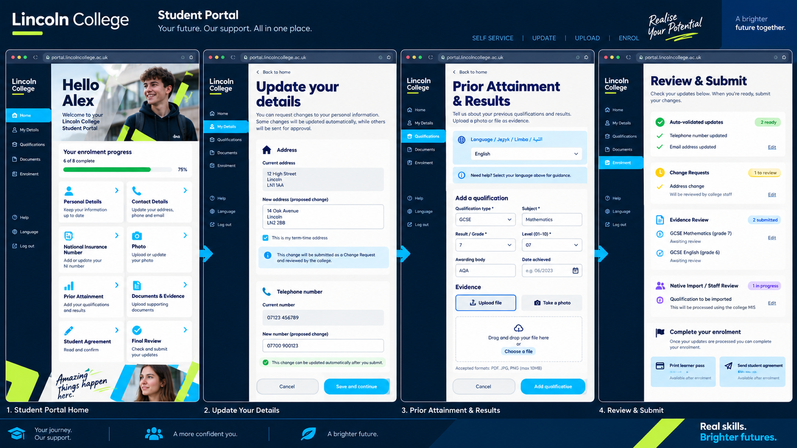

Your enrolment progress
6 of 8 actions complete 75%
Your future. Our support. All in one place.
SELF SERVICE / UPDATE / UPLOAD / ENROL
The proposed portal lets students review and update personal details, upload qualifications and evidence, and complete enrolment actions. Where appropriate, proposed changes enter ProSolution Change Requests. ProSolution permissions, validation and staff approval controls remain in force.
STUDENT PORTAL HOME
Welcome to your Lincoln College Student Portal.
Fictional student · illustrative progress6 of 8 actions complete 75%
Review your information and propose a change.
☎Update your address, phone and email.
▥Add your qualifications and results.
▤Provide supporting qualifications evidence.
✓Review outstanding enrolment actions.
→Check proposed changes before submitting.
STAGE 2 / YOUR INFORMATION
Review the current record and the proposed change side by side. These examples demonstrate routing; they do not update a student record.
12 Example Street
Lincoln
14 Sample Avenue
Lincoln
This proposed change would enter a Change Request for college staff to review.
alex.old@example.com
alex.new@example.com
Validation and routing depend on the college’s configured permissions. Automatic updates are only proposed where an approved rule explicitly allows them.
STAGE 3 / QUALIFICATIONS & EVIDENCE
Tell us about your previous qualifications and results. The proposed service supports document or photo evidence and language guidance.
Multilingual guidance is part of the proposal. This walkthrough is in English.
Qualification grade and prior attainment code are different fields. The final level must be checked against all relevant completed qualifications.
Proposed upload: PDF, JPG or PNG, or a photograph of a certificate.
Demo only: no personal files are collected.
Evidence awaits staff review. A submitted certificate does not automatically overwrite a qualification record.
STAGE 4 / CHECK BEFORE SENDING
Check the proposed changes and how each would be handled.
Email change checked against approved rules and permissions.
Review detailsAddress change → college staff review → approve or reject.
Review addressNo fictional certificate added in this walkthrough.
Accepted evidence proceeds through a supported native import or staff action, subject to the college’s configured controls.
Review qualificationsStudent agreements, enrolment confirmation and learner passes become available when the required college checks and approvals are complete.
No information will be sent to the college.

Visual reference only. Example addresses, progress and statuses are illustrative. The walkthrough above clarifies approval boundaries and leaves attainment-code mapping for verification.